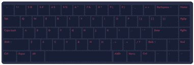

Mechanical keyboards
Mechanical switches
One of the most essential part in a mechanical keyboard is the switch. Based on their characteristics, there are basically three types of switches: Linear switches, tactile switches and clicky switches.
Linear switches are the simplest ones. They feel the same from the moment you start pressing the key until bottoming out. There is no tactile feedback or noise when hitting the actuation point (the point where the keypress gets registered – usually somewhere in the middle). So, most of the time, you will probably bottom out on each key press.
Tactile switches provide tactile feedback. They provide a noticeable bump in the middle of travel to let you know that your key press has been registered. They are ideal for typing because you get a slight indication of a keypress without needing to bottom out your keys.
Clicky switches provide an additional click sound, when hitting the actuation point. The main advantage of tactile and clicky switches is that you don’t have to push the key all the way down. You can release the key immediately after you receive the feedback.
Different sized keyboard
100%

80%
75%
65%
60%

50%